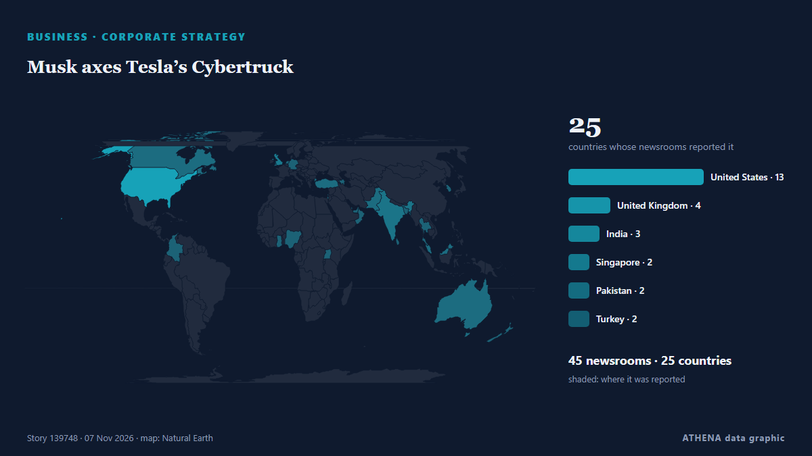

Entreprises et investissement
SponsoriséPrésenté par  Cybernetics and Artificial Intelligence Lab Welcome to the Cybernetics and Artificial Intelligence Laboratory, established at the Department of Business Administration of the National and Kapodistrian University of Athens. The lab is headed by Professor Dimitrios Thomakos. The lab aims to do research that can be published in top venues. Our research uses tools and methods of Artificial Intelligence, and lies in the following areas: - Forecasting - Decision making - Cyber security - Finance We are always looking forward to collaborating with exceptional students!
Cybernetics and Artificial Intelligence Lab Welcome to the Cybernetics and Artificial Intelligence Laboratory, established at the Department of Business Administration of the National and Kapodistrian University of Athens. The lab is headed by Professor Dimitrios Thomakos. The lab aims to do research that can be published in top venues. Our research uses tools and methods of Artificial Intelligence, and lies in the following areas: - Forecasting - Decision making - Cyber security - Finance We are always looking forward to collaborating with exceptional students!
Les titres sont affichés en anglais, tels que publiés.

Stratégie d'entrepriseMusk axes Tesla’s Cybertruck
Its CEO Elon Musk says this allows the automaker to accommodate increased output of its new Cybercab. de The Business Times
| 25 oct. | 37 |
|---|---|
| 26 oct. | 95 |
| 27 oct. | 96 |
| 28 oct. | 93 |
| 29 oct. | 104 |
| 30 oct. | 92 |
| 31 oct. | 27 |
| 1 nov. | 33 |
| 2 nov. | 115 |
| 3 nov. | 111 |
| 4 nov. | 112 |
| 5 nov. | 111 |
| 6 nov. | 63 |
| 7 nov. | 14 |
OpenAI Raises $11 Billion At $1.25 Trillion Valuation
The funding was wired to the company as of Friday. de NDTV
Texas governor-elect vows data-center restrictions as AI stocks plunge
Gina Hinojosa pledges safeguards for communities affected by data-center projects as Nasdaq falls 5.52% amid concerns over tighter regulations. de Anadolu Agency (English)
Google executive Donald Harrison resigns from SpaceX board
SpaceX disclosed on Friday that Google executive Donald Harrison has resigned from the rockets-to-AI company's board after more than a decade. de Deccan Herald
China's Governance and Worldwide Development Global Dialogue in Lyon
Global dialogue discusses China’s governance and worldwide development. de CGTN (World)
Tinubu recalls Mobil days, calls Akwa Ibom home
* Ekiti promises 90% votes for president at rally Deji Elumoye, Adedayo Akinwale in Abuja and Gbenga Sodeinde in Ado Ekiti President Bola Tinubu will depart Abuja today, November 6, for. de ThisDay (Nigeria)
Tourists drawn to Indonesia’s whale sharks boost villagers’ earnings
Villagers across the archipelago's eastern islands benefit from the tourism boom by offering boat rentals, diving services and drone services. de Free Malaysia Today
Ghana loses $6.5bn in potential mining revenue – IFS
The country loses an estimated $6.56 billion in potential revenue from the mining sector every year due to the government’s limited participation in mineral extraction, the Institute for Fiscal… de MyJoyOnline
$2bn Afreximbank fund targets Africa’s creative economy as CANEX opens in Lagos
By Elizabeth Onyogha Creative Africa Nexus (CANEX) WKND 2026 opened in Lagos yesterday, bringing together leading creatives, investors, policymakers, business leaders and cultural figures from across… de Vanguard
Luxembourg workers enjoy salaries more than double the EU average
The average annual full-time adjusted salary in Luxembourg was €85,600 in 2025, according to a report from Eurostat. de Luxembourg Times
Grab to cut driver fees, cap deductions at 32pct in Vietnam
HANOI: Vietnam’s competition commission said on Thursday that ride-hailing firm Grab had agreed to cut some fees charged to passengers and drivers and compensate drivers affected by excessive… de New Straits Times
Alfa Laval agrees $700 million deal to acquire NAVTOR
Alfa Laval has announced it has entered into a definitive agreement to acquire software platform NAVTOR for $700 million, marking what the company describes as one of its ‘most significant… de Bunkerspot
Banner appears outside hotel at former PCI HQ, 'your profit cannot erase our history'
(ANSA) - ROME, 06 NOV - A banner appeared overnight on Via delle Botteghe Oscure, in the heart of Rome, outside the building that once housed the headquarters of the once-powerful Italian Communist… de ANSA English
Channel 4 axes Married At First Sight UK after review following misconduct claims
Channel 4 chief executive Priya Dogra also confirmed season six of the show, which was filmed earlier this year, would not be broadcast. de The Irish News (Belfast)
EPADS 2.0: where procurement meets digital governance
Pakistan’s public procurement system has quietly crossed an important threshold over the past year, with the e-Pak Acquisition and Disposal System evolving from a platform for electronic tendering… de Business Recorder
Zipline raises $1.5bn at $21.5bn valuation as Walmart adds 300 drone sites
Zipline has raised $1.5bn at a $21.5bn valuation, the drone delivery company announced on Thursday. de The Next Web
Hong Kong firms must innovate to compete in mainland China, trade chief says
Hong Kong companies can survive intense competition in mainland China by being innovative and maintaining high standards, the head of the city’s trade promotion body has said. de South China Morning Post
DTE Energy to divest DTE Vantage in $3bn deal
DTE Energy has agreed to sell its non-utility DTE Vantage business to institutional investors in a deal valued at approximately $3bn. de Power Technology
Denmark, Lithuania latest Baltic navies to buy ‘Blocker’ mines through Finnish scheme
Denmark is the latest country to buy Finland’s “Blocker” naval mines, a day after Lithuania decided to go ahead with its own contract for the weapon. de Defense News
Soaring fuel costs hit profit at British Airways owner IAG
British Airways owner IAG has taken a hit to its profit due to “very high” jet fuel prices, which industry bosses have warned could force some airlines into collapse next year. de City A.M.
Babcock and Everllence sign MOU to power the next generation of Arrowhead Frigates
Babcock has signed a Memorandum of Understanding (MoU) with Everllence, a leading Danish provider of propulsion, decarbonisation and efficiency solutions for shipping, to explore a strategic… de Naval News
Ryder acquires Efficiency Enterprises
Ryder System has acquired Efficiency Enterprises, expanding its truck rental, leasing and maintenance network across the eastern United States. de Container News
Nintendo quarterly net profit drops as Switch 2 unit sales slow
TOKYO: Japanese gaming giant Nintendo reported a drop in quarterly net profit on Thursday as unit sales slowed for its Switch 2 console, but maintained its annual forecasts. de Business Recorder
KRA tax collections rise 15.5pc on business rebound
KRA said domestic revenue contributed Sh165.447 billion in October, exceeding its target by... de Business Daily Africa
Libya's top religious authority rules against wearing Nike clothes
The US company was named after the Greek goddess of victory, so the Dar al-Ifta said displaying its logo was unIslamic. de BBC News
Beef Giant JBS Faces Laundering Complaints
Campaigners filed 14 complaints in four European countries accusing JBS of laundering money tied to Amazon deforestation, which the company rejects. de The Rio Times
Russian Owner of Notorious Tanker Challenge US Sale as It Reaches Scrappers
The crude oil tanker Bella 1 (aka Marinera) reportedly arrived at Chattogram, Bangladesh, on November 4, under the name Era, prompting urgent new cour... de The Maritime Executive
Australia’s oldest department store, David Jones, folds after 188 years
The brand's 38 physical stores and online site will continue to operate while receivers review its operations. de BBC Business
S. Korea to see warm, wet winter due to powerful El Nino
SEOUL, Nov. 6 (Yonhap) -- South Korea is expected to experience a warmer and wet... de Yonhap (English)
Lehmann Marine Converts Danube Passenger Vessel to Fully Electric
Lehmann Marine, a Sunlight Group company, has converted the MS SISSI passenger ship to fully electric from traditional diesel in collaboration with operator Donauschifffahrt Wurm & Noé and OSWAG… de MarineLink
Ocean the star as Maersk reports Q3 bump in revenue, but drop in volume
Maersk experienced a 27% year-on-year bump in its third-quarter revenues, hitting $18.1bn, buoyed by a sharp rise in container freight rates that more than offset a slight dip in volumes, prompting… de The Loadstar
Shield AI to acquire radar maker Echodyne to bust drones
Shield AI's CEO said the purchase of Echodyne supports the company’s aim to branch into different areas of unmanned systems. de Defense News
Trump-linked American Bitcoin swings to $126 million profit but misses revenue estimates
American Bitcoin Corp., the Bitcoin mining company co-founded by Eric Trump, reported a $126 million profit in the third quarter of this year, reversing its $57.2 million loss in Q2 2026. de FXStreet
Apple is slashing AI budgets—the latest company to do so
Tokenmaxxing is on the way out, even as some of the biggest players in the tech industry are urging their employees to use AI as much as possible. de Fast Company
Humble Robotics raises $51M for cabless hauler pilots
Humble Robotics raised a $51 million Series A to push its cabless, electric Humble Hauler into customer pilots, testing and early manufacturing for dock-to-dock freight. de FreightWaves